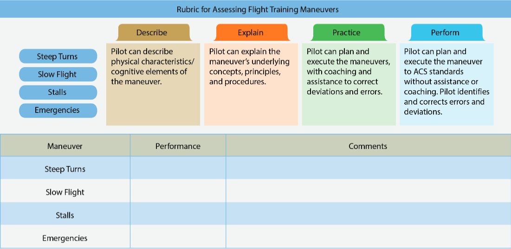

References
AIH Chapter 6: Assessment AIH Chapter 9: Techniques of Flight Instruction
Objectives:
The learner should develop knowledge of the elements related to evaluation, assessment & testing as required in the Instructor ACS.
Elements
Assessment Critique Assessment of Piloting Ability
Completion Standards
The learner can properly critique and evaluate learners using the methods and characteristics described.
Assessment
An effective assessment informs the instructor and learner about how well the learner is progressing.
A good assessment provides practical and specific feedback to the learner, and includes direction and guidance indicating how they may raise their level of performance. It also allows an opportunity for self-evaluation that enhances the learner’s ADM and judgement skills
A well designed assessment highlights the areas where the learner is incorrect or inadequate, which allows the instructor to add more emphasis where needed
Characteristics of Effective Assessment ^9f4f59
Objective
- Must be honest, based on facts, without personal opinion
Flexible
- Performance must be examined in the context it was accomplished
- Fit the tone, technique, and content of the assessment to the occasion and the leaner
- Allow for variables
Acceptable
- Confidence in the instructor’s qualifications, teaching ability, sincerity, competence, and authority make an honest assessment acceptable to a learner
- Negative feedback can be hard to hear but this helps
Comprehensive
- Cover strengths and weaknesses
- Instructor has to find “goldilocks” solution (not too much, not too little)
Constructive
- Allows the learner to benefit from the assessment
- When identifying a mistake or weakness, give positive guidance for correction
- Praise for it’s own sake or negative comments that don’t point to improvement should be omitted
Organized
- Must make sense to the learner and be logical
- Options for organization include:
- Sequence of the performance
- Work backward from where the demonstration failed or was successful
- Break the whole into parts or build the parts into a whole
Thoughtful
- Reflects the instructor’s thoughtfulness towards the learner’s need for self-esteem, recognition, and approval. Respects the learner’s personal feelings
- Ridicule, anger, or fun at a learner’s expense have no place in a critique
Specific
- Provides specific areas to work on for the learner, and the steps to take to improve
Traditional Assessment
- Assessment through written testing and grading.
- The learner typically has a set amount of time to recognize or reproduce memorized items, and there is typically a single correct answer
Traditional assessment usually assesses the learner’s progress at the rote and understanding levels of learning. It tends to lend itself to instructor-centered teaching styles
Characteristics of Good Traditional Assessment
Reliability
Whether a written test gives consistent measurement
Validity
Whether a written test measures what it is supposed to measure
Usability
Functionality of tests (legible, clear, easily graded, etc)
Objectivity
Singleness of scoring, without the instructor’s own knowledge, experience, writing style, grammar, etc. affecting the test
Comprehensiveness
The degree to which a test measures the overall objectives
Discrimination
The degree to which a test distinguishes itself between learners. It contains:
- A wide range of scores
- All levels of difficulty
- Items that distinguish between learners with differing levels of achievement of the course objectives
Authentic Assessment
- Requires the learner to demonstrate not just rote and understanding, but also the application and correlation levels of learning
- Generally requires the learner to perform real-world tasks and demonstrate a meaningful application of skills and competencies
Authentic assessment has specific performance criteria or standards that the learner knows ahead of time. Rubrics are also commonly used as a guide to score performance assessments in a reliable, fair, and valid manner
Assessments can be formal or informal
- Formal assessments typically involve documentation, such as a quiz or written exam, and are used throughout the course to measure and document whether the course objectives have been met
- Informal assessments generally occur as needed and are not part of the final grade
Learner-Centered Assessment
Four-step series of open-ended questions
1. Replay
Verbally replay the flight or procedure
2. Reconstruct
Identify the things that could have been done differently
3. Reflect
Reflect on the events to find insight
4. Redirect
Relate the lessons learned to other experiences
Can then compare the instructors assessment with the learner’s self-assessment
After assessment, progress is recorded on a rubric. Two broad rubrics are used:
- One assesses proficiency on skill-focused maneuvers/procedures
- One assesses proficiency on single-pilot resource management

Maneuvers Grades
Describe
Learner can describe characteristics and elements but needs help executing the maneuver
Explain
Learner can describe the activity, it’s concepts, principles, and procedures, but needs help executing
Practice
Leaner can plan and execute the scenario. Assistance corrects deviation and errors
Perform
Learner identifies/corrects errors and can perform the activity without instructor assistance
Not observed
Any event not accomplished or required
Risk Management Skills
Explain
The learner can verbally identify, describe, and understand the risks inherent in the flight scenario but needs to be prompted to identify risks and make decisions
Practice
The learner can identify, understand, and apply Single Pilot Resource Management (SRM) principles to the flight situation. Coaching, instruction, and/or assistance quickly corrects minor deviations and errors identified by the instructor. The learner is an active decision maker
Manage-Decide
The learner can correctly gather the most important data inside and outside the flight deck, identify possible courses of action, evaluate the risk inherent in each course of action, and make the appropriate decision. Instructor intervention is not required for the safe completion of the flight
Choosing an Effective Assessment Method
- Determine level-of-learning objectives
- List indicators of desired behaviors
- Establish criterion objectives
- Develop criterion-referenced test items
Oral Assessments
The most common means of assessment. Questions are generally classified as fact (memory or recall) and HOTS questions (analyze situations, solve problems, arrive at conclusions)
Proper quizzing by the instructor can have a number of desirable results, including;
- Reveal the effectiveness of the instructor’s training methods
- Check learner retention of what has been learned
- Review material already presented to the learner
- Retain learner interest and stimulate thinking
- Emphasize the important points of training
- Identify points that need more emphasis
- Check comprehension of what has been learned
- Promote active learner participation, which is important to effective learning
Effective Questions
To be effective, questions must:
- Apply to the subject of instruction
- Be brief and concise, but also clear and definite
- Be adapted to the ability, experience, and stage of training of the learner(s)
- Center on only one idea (who/what/when/where/how/why, but not in combination)
- Present a challenge to the learner
Types of Questions to Avoid:
- Yes/No
- Puzzle
- Oversize
- Toss-up
- Bewilderment
- Trick Questions
- Irrelevant
Critique
- An instructor-to-learner assessment
- Often has a negative connotation, but should consider good performance as well as bad, the individual parts, relationships of the individual parts, and the overall performance
- Can be oral, written, or both
- Should come immediately after a learner’s performance, while the details are easy to recall
Useful Ways to Conduct a Critique
Instructor - Learner Critique
In the Instructor/Learner Critique, the instructor leads a group discussion in which members of the class are invited to offer criticism of a performance.
- This method should be controlled carefully and directed with a clear purpose. It should be organized, and not allowed to degenerate into a random free-for-all.
Learner-Led Critique
In the Learner-Led Critique, the instructor asks a learner to lead the assessment.
- The instructor can specify the pattern of organization and the techniques or can leave it to the discretion of the chosen leader.
- Because of the inexperience of the participants in the lesson area, learner-led assessments may not be efficient, but they can generate learner interest and learning
Small Group Critique
In the small group critique, the class is divided into small groups, each assigned a specific area to analyze. Each group then presents it’s findings to the class.
- It is desirable for the instructor to furnish the criteria and guidelines.
- The combined reports from the groups can result in a comprehensive assessment.
Individual Learner Critique by Another Learner
The instructor may require another learner to present the entire assessment.
- A variation is for the instructor to ask a number of learners questions about the manner and quality of performance.
- Discussion of the performance and of the assessment can often allow the group to accept more ownership of the ideas expressed.
- As with all assessments incorporating learner participation, it is important that the instructor maintain firm control over the process
Self-Critique
A learner critiques personal performance in a self-critique.
- Like all other methods, a self-critique receives control and supervision from the instructor.
Written Critique
An in-depth written analysis.
- A written critique has three advantages:
- The instructor can devote more time and thought to it than to an oral assessment in the classroom.
- Learners can keep written assessments and refer to them whenever they wish.
- When the instructor asks all learners to write an assessment of a performance, the learner-performer has the permanent record of the suggestions, recommendations, and opinions of all the other learners.
- Written assessments do have the disadvantage that other members of the class do not benefit because of the private nature of the written assessment.
- Whatever the type of critique, the instructor should resolve disagreements and correct erroneous impressions.
- The instructor also must makes allowances for the learners’ relative inexperience.
- Normally, the instructor should reserve time at the end of the learner assessment to cover those areas that might have been omitted, not emphasized sufficiently, or considered worth repeating
Assessment of Piloting Ability
Assessment is an essential component of the teaching process and determines how, what, and how well a learner is learning.
- A well designed assessment provides a learner with something constructive to work or build upon.
- Learners must understand the purpose of the assessment
Assessments can also be used as a tool for reteaching, if the instructor observes a deficiency.
Demonstrated Ability
Assessment of Demonstrated Ability must be based on established standards of performance, and adjusted to apply to the learner’s experience and stage of development as a pilot
Postflight Evaluation
Evaluation that occurs after a maneuver or flight to keep the learner informed of progress
- Postflight critiques should be in a written format
- With SBT, collaborative assessment is used when a scenario is completed
- Self-Critique and Full Instructor Assessment
Solo Flight
During a first solo flight, the instructor needs to be present to assist in answering questions or resolving any issues that arise during the flight.
- Have access to a portable radio if possible, to monitor and terminate the solo if a situation arises.
Critical to ensure a positive, confidence building experience
Make sure to debrief immediately after solo
- Answer questions, ensure correct flight procedures
Correction of Learner Errors
Safety permitting, it’s often better to let learners progress part way into a mistake and find a way out.
- Unless really needed, try not to take over from the learner immediately when a mistake is made.
It is also possible that a learner will perform a procedure correctly but not fully understand the principles/objectives
- If suspected, require the learner vary the procedure slightly, combine with another operation, or apply elements to the performance of another procedure
Practical Test Recommendations
Signing a recommendation for a practical test is a serious responsibility for the flight instructor
- A flight instructor who makes a practical test recommendation for an applicant seeking a certificate or rating should require the applicant to thoroughly demonstrate the knowledge and skill level required for that certificate or rating.
- This demonstration should in no instance be less than the complete procedure prescribed in the applicable ACS/PTS.
- Failure to ensure the learner meets the requirements is a serious deficiency in instructor performance.
Risk Management: Delivering an Assessment
This topic is a discussion of mitigating risk associated with delivering assessments.
It is critical that assessments are delivered in a timely manner to the learner, it is critical that the instructor comes from a place of experience and expertise so that the learner trusts the assessment, and it is critical to ensure that both the positive and the negative are reviewed and commented upon.